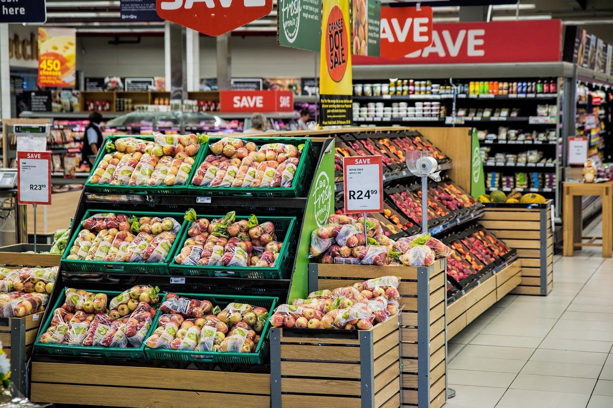

February 06, 2026
This project demonstrates an end-to-end ETL pipeline and data warehousing workflow, integrating global GDP data from Wikipedia, country details from JSON files, and sales data from CSV files. The datasets were cleaned, transformed, and loaded into structured staging and historical tables before being modelled into analysis-ready views.
For a Data Analyst like me, this gives a clearer understanding of how my analytics data is sourced, transformed, and stored. It makes it easier to detect data quality issues, question inconsistencies, and confidently validate the numbers behind my analysis rather than treating them as black-box outputs.
In this project, I built a Linear Regression model to predict scrap car prices. I cleaned and processed the data, handled categorical features, and removed outliers. After training the model, I evaluated it using R² and cross-validation. The model achieved around 80% accuracy, providing a reliable baseline for predicting car scrap values.

This project explores Global Superstore’s sales data to identify patterns in customer behavior, product performance, and seasonal trends. It showcases my ability to clean and analyze data and provide recommendations that can guide stakeholders in making better decisions.
This project analyzes US police deaths in the line of duty, revealing that gunfire, automobile crashes, and heart attacks are the leading causes, with certain ranks and states most affected. It demonstrates my ability to clean and analyze data, extract meaningful insights, and make recommendations using R programming.
This project looks at hotel reservation data to see how people book rooms, which room types are most popular, and how revenue varies across properties. It shows my skills in cleaning, organizing, and analyzing data using SQL.
This project analyzes Twitter reactions to Marc Cucurella’s transfer to Chelsea FC using Natural Language Processing. I scraped tweets, cleaned and processed the text, and performed sentiment analysis to classify reactions as positive, neutral, or negative. The results show that most tweets were positive, with a smaller portion being negative. This project showcases my skills in web scraping and sentiment analysis using Python.
This project analyzes retail sales data to categorize products based on how well they sell and the value they bring to the business. Using Excel, I cleaned and prepared the data, applied RFM-inspired scoring to group products, calculated revenue, and identified trends in sales and back orders. The project highlights my ability to manipulate large datasets, create formulas, use pivot tables, and visualize insights in Excel to support business decisions.